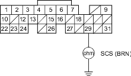

- Measure voltage between ECM/PCM connector terminal E29 and body ground.
ECM/PCM CONNECTOR E (31P)
Wire side of female terminals
Is there about 5 V (or battery voltage)?
YES - Go to step 81.
NO - Go to step 78.
- Turn the ignition switch OFF.
- Disconnect ECM/PCM connector E (31P).
- Check for continuity between ECM/PCM connector terminal E29 and body ground.
ECM/PCM CONNECTOR E (31P)

Wire side of female terminals
Is there continuity?
YES - Repair short in the wire between the DLC and the ECM/PCM (E29). 
NO - Substitute a known-good ECM/PCM and recheck. If symptom/indication goes away, replace the original ECM/PCM.
- Turn the ignition switch OFF.
- Disconnect ECM/PCM connector E (31P).
- Turn the ignition switch ON (II).
Is the MIL on?
YES - Repair short in the wire between the gauge assembly and the ECM/PCM (E31). If the wires are OK, replace the gauge assembly.
NO - Substitute a known-good ECM/PCM and recheck. If symptom/indication goes away, replace the original ECM/PCM.